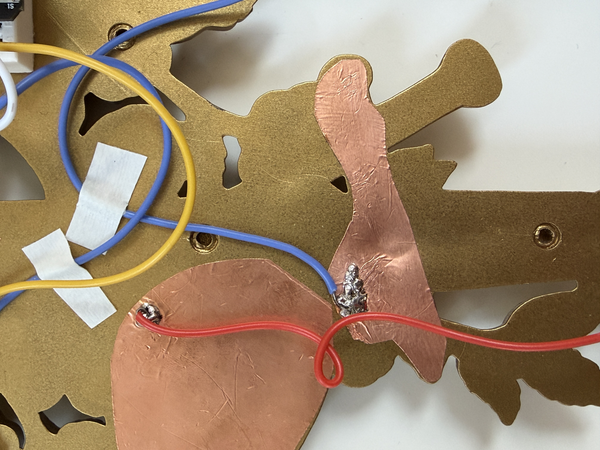
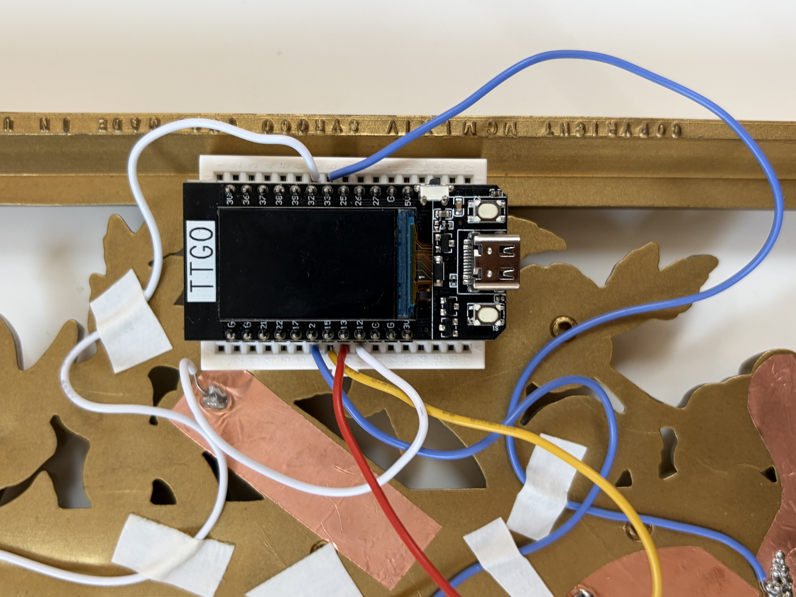
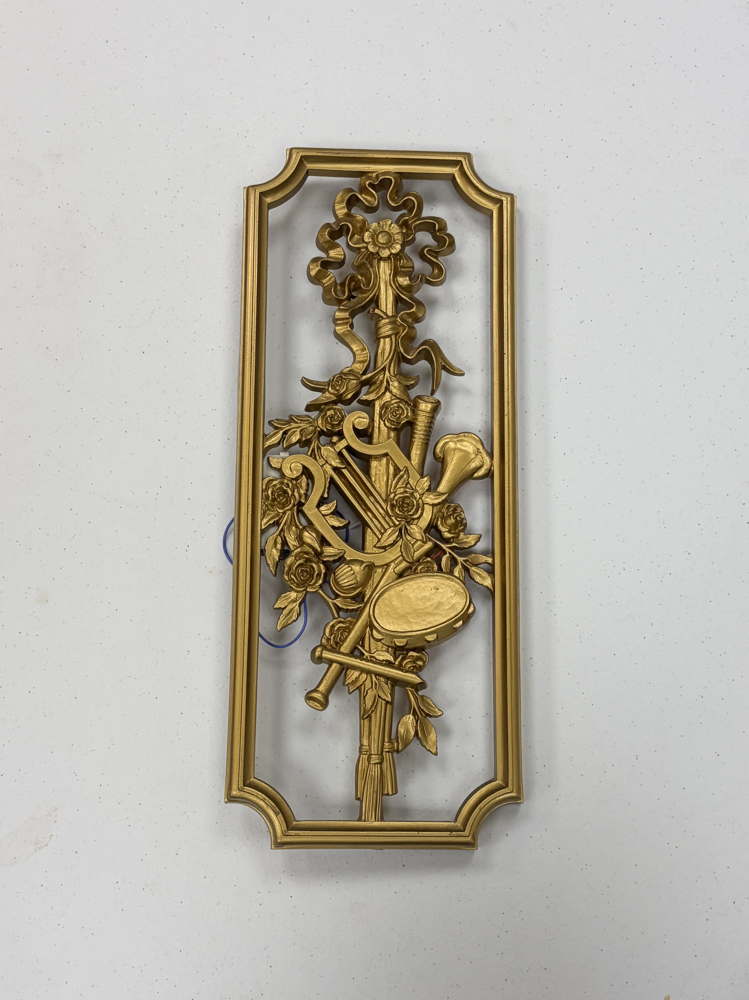
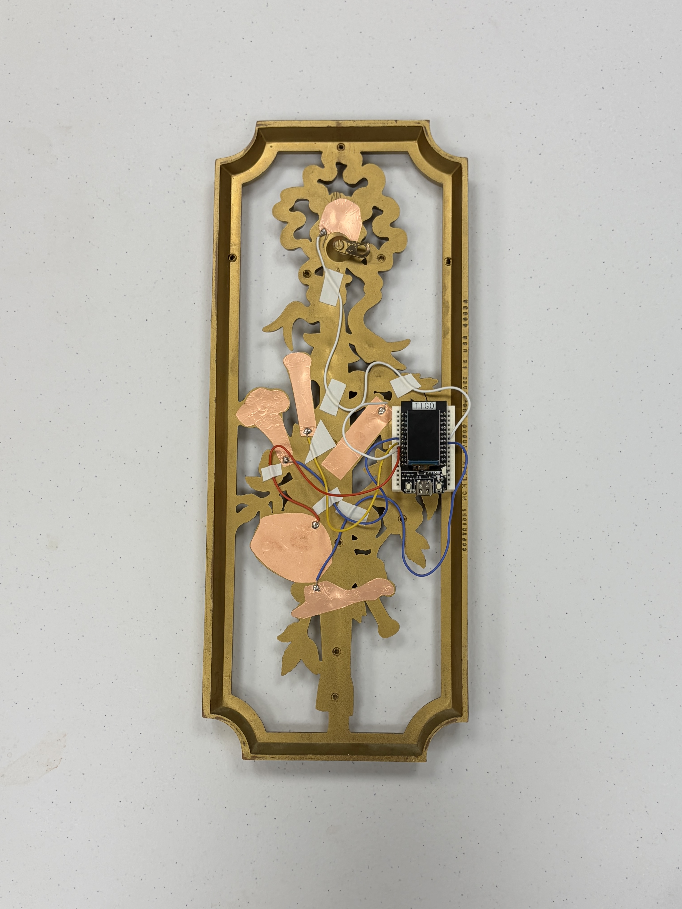

Technical documentation: GitHub Repository
My creative goal was to refashion an object that I already owned but didn't have a use for into something that brings delight and whimsy.
In keeping with my broader theme for this class of inspiration from my friends, I chose a gilded decor piece that I had bought as a matching
set for myself and my roommate. I hadn't been able to hang it up due to impracticality, but I wanted to find a way to incorporate the musical
instruments on them, which was the reason I had bought them for us, as we both appreciate music.
Quickly, I decided to make the piece interactive by adding copper tape touch sensors to each of the five instruments, so that I could wire them to
a touch pin on the ESP32 to trigger a sound effect of the corresponding instrument. For my mode switch, I placed another touch sensor to turn the
flower at the top of the piece into a button that toggles between two modes: one where the instruments play their corresponding sound effects,
and another where they continuously loop their sound so that the user can create a "composition" by layering the instruments. The device is controlled
via web serial connection from my laptop program to the ESP32, which is then wired to the touch sensors using a breadboard and solid core wire that I
soldered to the copper.
Mode 0/1 Switch Demo.
Real life demo with friends.

Extra solder to fix technical challenge.

Closeup of wiring and breadboard.
What I found worked well during the process was designing the placement of my breadboard and touch sensors early on, so that I
could plan out the organization of the wiring. I also found that the most efficient way to solder the wires to the copper tape was
to lay the tape cut-outs on a flat surface and clip the wire above so that the ungloved wire was touching the tape, after experimenting
with using two clips to hold the wire and tape in the air and finding that the components would shift around excessively.
I encountered some trouble with my flute touch sensor, which was a thinner strip of copper tape that I had soldered completely to
a wire, but it sent very inconsistent signals to the ESP32. After much testing, I found that sometimes the touch sensor would work perfectly and
other times it wouldn't work at all. With some advice from Miles, I decided to add extra solder to the connection to spread out horizontally
towards the end of the tape strip (pictured above), which significantly improved the conductivity and made the sensor work consistently.
My favorite part of the project was seeing my friends interact with it and exclaim in delight when they realized they could create their own
music with it. I feel as though I've accomplished my creative goal in making a genuinely interesting interactive piece out of an object that
I had in my possession.

Front.

Back.